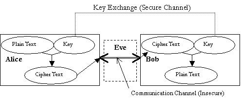
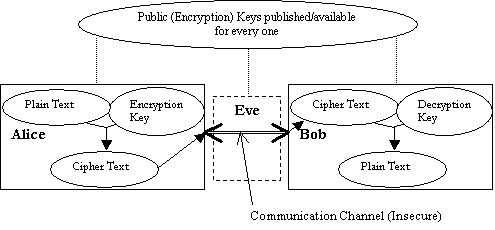

Cryptography
Computer Science & Statistics at University of Rhode Island
|
Cryptography Concepts In cryptography three names appear everywhere. They are Alice, Bob, and Eve. Alice and Bob are friends exchanging encrypted messages. Eve is an eavesdropper, trying to break and read the messages being exchanged between Bob and Alice. Cryptographic algorithms can be categorized into two groups: symmetric (secret-key) and asymmetric (public-key) algorithms. In symmetric algorithms Bob need to send the key information to Alice or they have to agree on a single key in order to exchange messages. In asymmetric algorithms Bob will have two keys, a public key and a private key. Bob publishes his public key to every one. Alice uses Bobs public key to encrypt messages and sends them to Bob. Bob on receiving the message, uses the private key to decrypt them. Eve also has access to the Bobs public key but she cannot decrypt messages as she does not know Bobs private key and it is almost impossible to discover the private key with just the knowledge of the public key.
 Symmetric Cryptosystem
 Asymmetric Cryptosystem
Definitions
Converting strings to numbers and vice-versa Cryptography algorithms are mathematically based and work with numbers. As a result, we need to convert text to numbers before using cryptography algorithms and then convert the resulting numbers back to text. We have used 3 methods for converting strings to numbers and vice-versa. Character Method: This method is used to convert alphabets into numbers for use in classical cryptosystems. The letters A Z are mapped to 0 25. In this method any other characters other than alphabetic ones are discarded. If the cryptosystem is a block cipher then padding is done with the character Z at the end when required. Example: a 0, b 1 .z 25 6-bit Binary Method: This method is used to convert the strings to binary bits. The method is used for D.E.S, which works with binary bits. We have used a 6 bit binary representation to convert character strings to binary bits. 64 different characters can be represented using a 6-bit binary number (26 = 64). So in this method the valid character are 26 lower case alphabets, 26 upper case alphabets, digits 0 to 9, comma and a period. Padding is done with period at the end if required. Example: a 000000, b 000001 z 011011, A 011010, B 011011 Z 110011, 0 110100 9 111101, comma 111110, period 111111. String Method: This method is used with public key cryptosystems. In this method the valid characters are the English alphabets. To convert a string of size n the following equation is used. Let X be the number the represents the string S = c1c2c3 cn, and x1, x2, x3 xn, be the numerical equivalents of c1, c2, c3 cn, using the character method. Then X = (x1 * 26 0) + (x2 * 26 1) + (x3 * 26 2) + (xn * 26 n-1) or X = (x1 * 26 n-1) + (x2 * 26 n-2) + (x3 * 26 n-3) + (xn * 26 0) In public key cryptosystem most of the calculations are done mod m, where m is one of the parameters of the key. So the above formula will not be good if the string is too long and the value of X is greater then m. So the plaintext/ciphertext has to be divided into substrings to make sure that the value of X for all the substrings is less than are equal to m-1. How to decide the size of the substrings? The size of the plaintext substring will be floor(log26m). This formula makes sure that the value of X for all the substrings of is less than or equal to m-1. The maximum value of X for a substring of size floor(log26m) can be much less than m-1 and the public key works in modulo m, therefore after encryption we can get numbers that are bigger than the maximum value of X and less than p. The we have the problem of converting this number into a string of size floor(log26m), so the ciphertext will be of size ceiling(log26m). Example: Let m = 731. plaintext =HIHB Let the formula for encryption is CT# = (PT# * 21) mod m First find the acceptable size of the substring = floor(log26731) =2 HI = 7 * 26 0 + 8 * 26 1 = 7 + 208 = 215 HB = 7 * 26 0 + 1 * 26 1 = 7 + 26 = 33 Apply encryption formula = (215 * 21) mod 731 = 129 (33 * 21) mod 731 = 693 Using the size of 2 the zz represents the maximum number 25 * 26 0 + 25 * 26 1 = 675. So the number 693 cannot be represented using two characters, thus we need to use 3 characters for the ciphertext. |